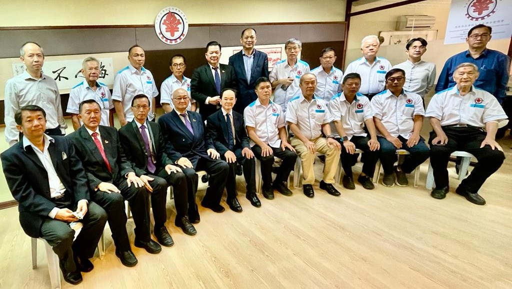
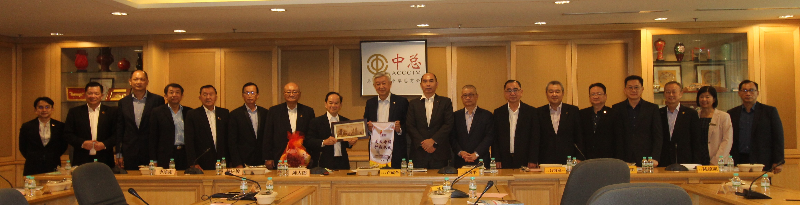

董总拜访校友联总与中总
促进相互关系 交流华教课题
2022年10月11日，董总主席陈大锦率团先后拜访了马来西亚华校校友会联合会总会（校友联总）和马来西亚中华总商会（中总），以促进彼此之间的紧密联系，并针对华教课题进行讨论与交流。
董总代表与校友联总代表合照。陈大锦表示感谢有关团体与董总进行交流，并指出华校、华团与华报，长期以来在维护与发展华文教育方面，扮演了非常重要的角色，是并肩作战多年的战友，大家总是给予全力的配合和协助。他也表示，教育改革的课题也需给予关注，未来的教改将会通过跨越课堂、跨越学校的持续学习过程，让学生从中培养自主学习的能力和习惯，让学生学习自主探索和建构知识，成为学习的主导者。目前，华教面临重重难关，课题层见叠出，董总依然会秉持“关心政治、超越政党”的立场，维护和发展母语教育，争取平等地位。
上午在校友联总会所进行交流时，校友联总会长叶全发致欢迎词时表示，早期的华教三机构，是指董总、教总和校友联总，所以任何的受邀活动都会一同出席。故此，华教三机构必须加强协作，在有关华教课题上，该会将以董教总马首是瞻。此外，该会也计划先在雪隆区推动文艺活动和表演，以提升孩子对文化的兴趣，若成功汇集和普及化后，将会扩展至全国各校。在华教课题上，三机构必须要有分工，若面对更大的华教课题，最好号召更多的华团共商。
董总代表与中总代表合照。下午于中总总部进行交流时，中总总会长丹斯里卢成全致欢迎词时指出，中总与董总都扮演着引领华社前进的重要角色，中总专注于国家经济建设、捍卫商家权益和关注各种有关经商的课题；而董总则是我国华教发展的领导机构，维护与发展华文教育不遗余力。双方各司其职，在各自领域与岗位上，为我国华社积极做出贡献。此外，他也肯定董总一直以来为华社培育不少优良人才，贡献有目共睹，毕竟企业的永续发展，除了良好的经营方针，人才也占了非常重要的一环。他也表示，中总也关注微型华小课题，近期参与了教育部召开的探讨微型华小未来大方向的会议，希望政府在华裔人口稠密地区增建华小或拟定完善的迁校机制。
当天在会上也汇报和分享了董总的工作方向、华小课题和筹建华教综合大厦等课题。
董总访问团成员包括副主席杨应俊、李添霖、卢成良和吴小铭，秘书长庄俊隆、财政杨安山、执行长梁胜义、副执行长（总务处）兼资料与档案局局主任锺伟前，以及会务与组织局局主任林纪松、执行员陈智崇和助理梁君仪。校友联总代表包括署理主席陈国新，副会长余开云、沈康顺、萧成兴和陈达留，秘书张甲由、财政罗耀明，理事梁宏麟、苏河松、廖亚佑，以及执行秘书黄新城等。中总代表包括署理总会长拿督吴逸平硕士，副总会长拿督吕海庭局绅和拿督廖志明，总秘书拿督陈镇明、第二副总秘书拿督陈杰辉、副总财政叶翃瑚、中央理事傅庆隆律师和执行长浦文琼等。